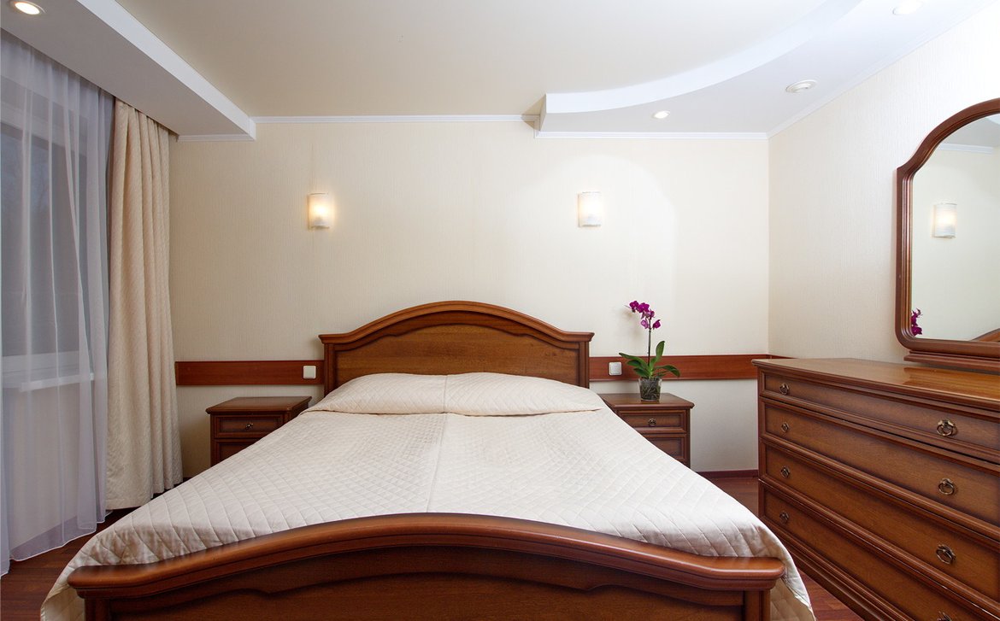
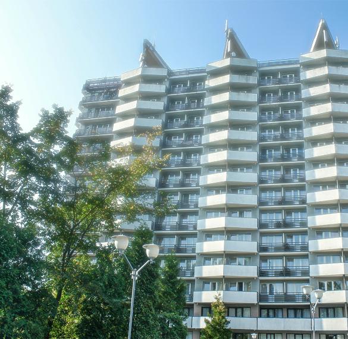

- Санкт-Петербург, Курортный р-н
- г .Зеленогорск, ул.Курортная, 1
(812) 454-14-14
Санаторий гостеприимно распахнул свои двери для отдыхающих в 1980 году. Красивый четырнадцатиэтажный корпус "Балтийского берега" гармонично вписался в панораму города-курорта.
Хвойные леса, чистый воздух и песчаные пляжи идеально подходят для климатотерапии. А красота северной природы Карельского перешейка сделают ваш отдых в Зеленогорске незабываемым!
Теперь здесь успешно восстанавливают здоровье взрослые и дети. Мы делаем все для того, чтобы человек забыл свои повседневные заботы и окунулся в мир красоты и уюта. Город-курорт Зеленогорск прекрасен в любое время года.
В свободное от лечения время отдыхающие могут побывать в парке на берегу Финского залива, познакомиться с достопримечательностями города, посетить уютные кафе и рестораны.
Солнце, воздух и вода, игры на свежем воздухе летом, прогулки на лыжах и финских санях зимой укрепят здоровье и подарят хорошее настроение.
Уверены, что отдых в санатории «Балтийский берег» доставит вам радость и поможет укрепить здоровье!
В главном корпусе санатория расположены:
В оздоровительном комплексе санатория расположены:
На территории санатория расположены:
|

|
мы помогаем гостям обрести здоровье
гостей посетили нас в 2015 году
турагентств рекомендуют нас своим клиентам
на побережье Финского залива
До середины прошлого века на месте Зеленогорска располагался финский поселок Териоки. В настоящее время город-курорт является одним из центров санаторно-курортного комплекса Санкт-Петербурга. Хвойные леса, чистый воздух и песчаные пляжи идеально подходят для климатотерапии.
А красота северной природы Карельского перешейка сделают ваш отдых в Зеленогорске незабываемым!